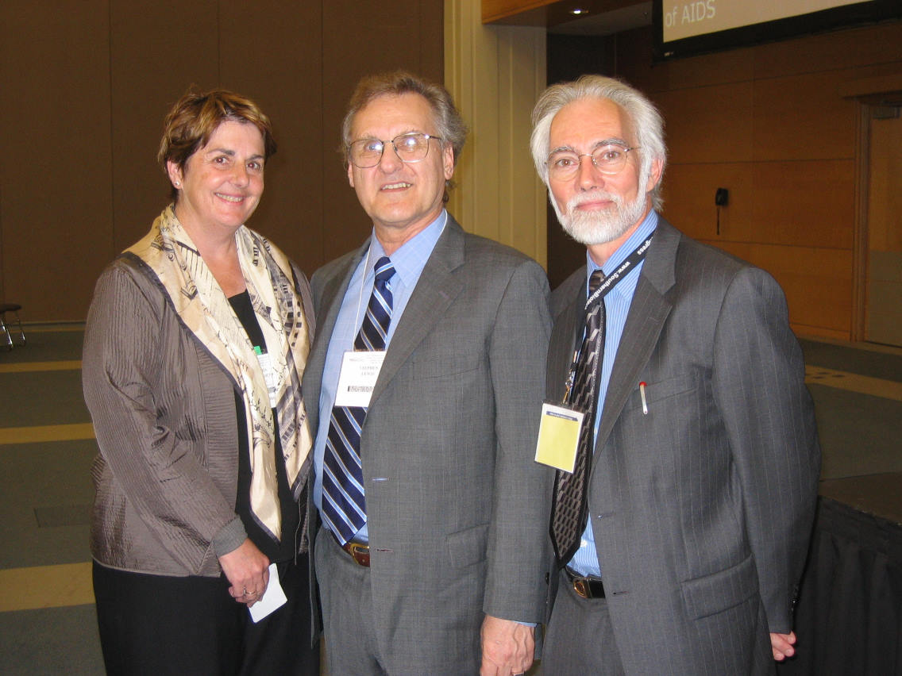
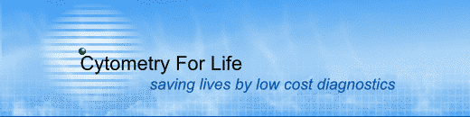

| 
Maria Pallavicini (Past President, ISAC), Stephen Lewis, J. Paul Robinson (President, ISAC)
|
Downloads & Support Materials (Link to Purdue Univeristy Cytometry Labs)
Watch a recent talk by Stephen Lewis
An article in Nature Medicine on Stephen Lewis and referencing Cytometry for Life program at Purdue NATURE MEDICINE VOLUME 12 | NUMBER 10 | page 1107 OCTOBER 2006
An article in Nature Medicine on the The Purdue Cytometry for Life Low Cost CD4 instrument NATURE MEDICINE VOLUME 13 | NUMBER 10 | page 1131 OCTOBER 2007
Videos - on the Invention of Flow Cytometry & our HIV/AIDS programA video on the invention of the cell sorter and how this related to current day needs
Audio Powerpoint lectures (listen while waching a PPT presentation)
Basics of Flow Cytometry I (select E-lectures, Number 1) Basics of Flow Cytometry II (select E-lectures, Number 2)
Literature of Interest On Flow Cytometry from our labAn encyclopedia article on Flow Cytometry (2 meg PDF) A chapter on Measurement of cell function by flow cytometry (2.4 meg PDF) A recent article on Integrating Cytomics and Proteomics (700kbytes PDF)
Books you can read on Flow Cytometry
UNAIDS articlesAIDS Epidemic Update (Open PDF 4.6 megs ) Overview of the Global AIDS Epidemic (Open the PDF 5 megs) |
||||
|  |
|